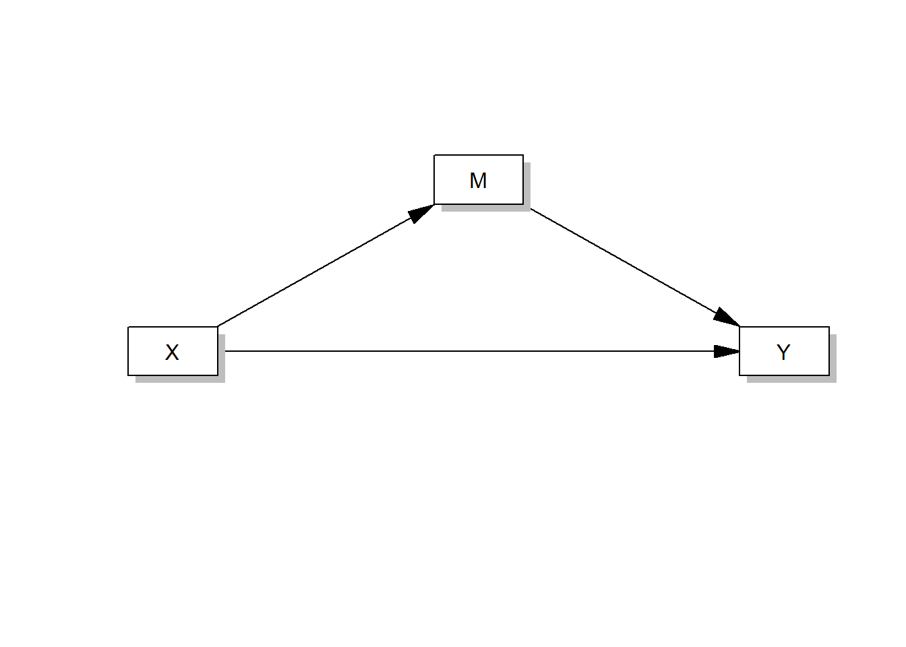
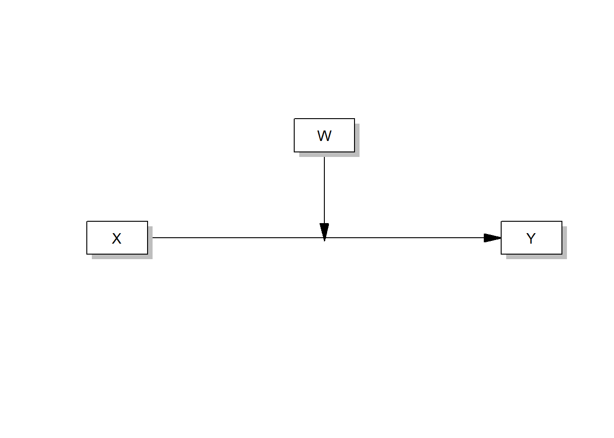
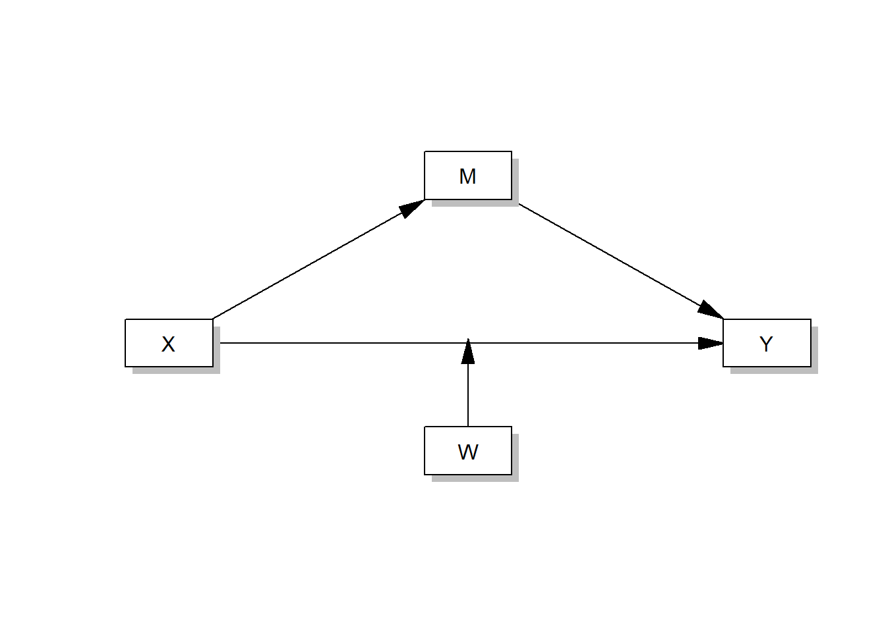

17 Tutorial: CPA and model fit
After working through Tutorial 17, you’ll…
- know what Conditional Process Analysis is
- know how to fit a model with
lavaan - know how to evaluate model fit using fit indices
17.1 What is CPA?
You have now spent a great deal of time studying mediation analysis – which investigates (psychological) processes – and moderation analysis – which investigates conditional effects in subgroups of the population. As you might imagine, both mediation and moderation analysis, but especially the combination of the two, is what we call Conditional Process Analysis (CPA). This means that you have already learned how to perform a CPA!
processR allows you to easily perform all different kinds of CPA, you merely need to change a few parts of the code.
For example, this code runs a simple mediation model (just like in Tutorial: Mediation analysis):
process(data=data, y="Outcome Y", x="Focal predictor X", m="Mediator M", total=1, normal=1,model=4,seed=42)
And this one runs a simple moderation analysis (just like in Tutorial: Moderation analysis):
process(data=data,y="Outcome Y",x="Focal predictor X",w="Moderator W",model=1,plot=1)
Of course, you don’t need to know all of the following models to pass this course, but you could and often should run more complex models, in which a fourth variable W moderates one or more causal paths in a mediation analysis (moderated mediation models).
Like this one:
process(data=data,y="Outcome Y",x="Focal predictor X", m="Mediator M", w="Moderator W",model=5,total=1,plot=1,seed=42)
Or this one:
process(data=data,y="Outcome Y",x="Focal predictor X", m="Mediator M", w="Moderator W",model=14,total=1,plot=1,seed=42)
Or this one:
process(data=data,y="Outcome Y",x="Focal predictor X", m="Mediator M", w="Moderator W",model=58,total=1,plot=1,seed=42)And even this one:
process(data=data,y="Outcome Y",x="Focal predictor X", m="Mediator M", w="Moderator W",model=59,total=1,plot=1,seed=42)Alternatively, you can run models with more than one mediator, e.g. this parallel multiple mediator model:
process(data=data,y="Outcome Y",x="Focal predictor X", m=c("Mediator M1","Mediator M2"),model=4,total=1,seed=42)Or a serial multiple mediator model like this one:
process(data=data,y="Outcome Y",x="Focal predictor X", m=c("Mediator M1","Mediator M2),model=6,total=1,seed=42)If you want to get an idea of what models you can run and what number you need to enter in the model option to run them, consult Hayes, 2022, pp. 621-638 in the future.
17.2 Fitting models with lavaan
Lavaan is an R package that is designed for latent variable modeling, i.e. structural equation modeling (SEM). In this course, you won’t model latent variables because that would be overwhelming. However, SEM and CPA follow a very similar process-oriented logic. Therefore, we can fit CP(A) models in lavaan and use the very neat model fit indices that lavaanprovides us with!
lavaan comes with its own lingo, i.e. operators, to fit models. These are the two most important ones8 that you should know about:
| Image: Overview of important lavaan operators (Source: Gana & Broc, p. 65): |
As you can see, regressions are fitted in a similar way as in the lm()function for linear regression models, namely using the ~ operator. Let’s see lavaanin action. Let’s fit the mediation model from [Tutorial: Mediation model] again, but this time in lavaan. In the mediation analysis, we investigated whether the effect of conservatism (X) on support for government action against climate change (Y) is mediated by negative emotions about climate change (M).
First, we need to load the data again and fire up lavaan:
if(!require(processR)) {
install.packages("processR");
require(processR)
} #load / install+load processR
data <- processR::glbwarm
data <- data %>%
mutate(conservative_voter = case_when(
partyid == 1 ~ "Liberal voter",
partyid == 2 ~ "Liberal voter",
partyid == 3 ~ "Conservative voter")) %>%
mutate(conservative_voter = factor(conservative_voter, levels = c("Liberal voter", "Conservative voter"))) %>%
mutate(conservative_voter_bin = case_when(
conservative_voter == "Liberal voter" ~ 0,
conservative_voter == "Conservative voter" ~ 1))
if(!require(lavaan)) {
install.packages("lavaan");
require(lavaan)
}Now, we need to specify the model that we want to fit using the lavaan operators. In this step, you write down all the regression models that you want to run. Remember that for a mediation model, we need to run two regression models:
A simple linear regression model: direct effect a of X on M, i.e. the effect of conservatism on negative emotions about climate change
The multiple linear regression model: the effect of conservatism AND negative emotions about climate change on support for government action against climate change, i.e., the direct effect c’ (here called: c1) of X on Y while controlling for M AND direct effect b of M on Y while controlling for X)
You must enclose your model specification in single quotes (’ ’) each time to indicate that it is lavaan code.
# Model specification with lavaan operators:
model.SPE <-
'
# simple linear regression, direct effect a of X on M
negemot ~ a * ideology
# multiple linear regression, direct effect b (M on Y while controlling for X) AND direct effect c´ (X on Y while controlling for M)
govact ~ c1 * ideology + b * negemot
'Next, you need to fit the model using your data, i.e. estimate the coefficients:
# Model Estimation
model.EST <- sem(model.SPE, data = data, estimator = "MLR")
# model.SPE is the model that you specified in the previous step
# sem() tells lavaan that you want to fit a "classical" model
# the MLR estimator works great for scales with at least 4 response categories, which is the case hereFinally, let’s evaluate the fit of our model! What coefficients does the model estimate (see “Regressions” section)?
# Model Evaluation
summary(model.EST,
fit.measures = TRUE, # get all the lovely fit indices
rsq = TRUE) # provide R^2## lavaan 0.6-11 ended normally after 1 iterations
##
## Estimator ML
## Optimization method NLMINB
## Number of model parameters 5
##
## Number of observations 815
##
## Model Test User Model:
## Standard Robust
## Test Statistic 0.000 0.000
## Degrees of freedom 0 0
##
## Model Test Baseline Model:
##
## Test statistic 504.977 408.130
## Degrees of freedom 3 3
## P-value 0.000 0.000
## Scaling correction factor 1.237
##
## User Model versus Baseline Model:
##
## Comparative Fit Index (CFI) 1.000 1.000
## Tucker-Lewis Index (TLI) 1.000 1.000
##
## Robust Comparative Fit Index (CFI) 1.000
## Robust Tucker-Lewis Index (TLI) 1.000
##
## Loglikelihood and Information Criteria:
##
## Loglikelihood user model (H0) -2656.000 -2656.000
## Loglikelihood unrestricted model (H1) -2656.000 -2656.000
##
## Akaike (AIC) 5322.000 5322.000
## Bayesian (BIC) 5345.516 5345.516
## Sample-size adjusted Bayesian (BIC) 5329.638 5329.638
##
## Root Mean Square Error of Approximation:
##
## RMSEA 0.000 0.000
## 90 Percent confidence interval - lower 0.000 0.000
## 90 Percent confidence interval - upper 0.000 0.000
## P-value RMSEA <= 0.05 NA NA
##
## Robust RMSEA 0.000
## 90 Percent confidence interval - lower 0.000
## 90 Percent confidence interval - upper 0.000
##
## Standardized Root Mean Square Residual:
##
## SRMR 0.000 0.000
##
## Parameter Estimates:
##
## Standard errors Sandwich
## Information bread Observed
## Observed information based on Hessian
##
## Regressions:
## Estimate Std.Err z-value P(>|z|)
## negemot ~
## ideology (a) -0.353 0.034 -10.388 0.000
## govact ~
## ideology (c1) -0.222 0.028 -8.043 0.000
## negemot (b) 0.438 0.028 15.701 0.000
##
## Variances:
## Estimate Std.Err z-value P(>|z|)
## .negemot 2.049 0.080 25.557 0.000
## .govact 1.133 0.063 17.939 0.000
##
## R-Square:
## Estimate
## negemot 0.122
## govact 0.387The coefficients in the “Regressions section” all replicate our findings from the lm() models in Tutorial: Mediation analysis, you can check that yourself. But that’s not the interesting part because we already know these coefficients. We are interested in the model fit.
How do we evaluate model fit? What indices should we look at?
Which indices are best for evaluating model fit is an ongoing debate in the social science community. This is a list of recommendations by Gana & Broc (2019) about what indices you should report when evaluating model fit and I strongly advice you to follow their lead. The authors provide recommendations on how high/low these indices need to be to be considered “(very) good fit”:
| Image: What fit indices to report (Source: Gana & Broc, p. 43): |
You can find all of these indices in the “head section” of the lavaan output. I marked everything with colors so you know where to find which fit measure. Here, we’ll interpret the “robust” estimations (because we used the MLR estimator that produces robust results):
| Image: Where to find the fit indices in the output: |
Evaluation: Following the guidelines of Gana & Broc, you could argue that this model has an AMAZING fit (spoiler: but that would be a false claim): SRMR ≤ 0.08, RMSEA ≤ 0.05, and both TLI & CFI ≥ 0.95. However, our mediation model is an exception because degrees of freedom (df) = 0 and, thus, chi2 = 0. Models that have 0 df will always produce a perfect fit; they are a special case of models that is called saturated. 0 df indicate that there is no need to use a structural equation model to estimate this model. We can easily estimate this model using regressions, which we did in the prior chapters.
Consequently, lavaan becomes only useful if you want to compare complex CPA models, e.g. moderated mediations or mediated mediations.
17.3 Example: Evaluate model fit for complex models
In order to learn how to interpret fit indices to evaluate model fit, let’s look at more complex CPA models that come with more degrees of freedom (df).
17.3.1 Theory-driven hypotheses
Let’s assume we have to competing theories that we want to test against each other on the glbwarm data set:
- Following the first theory, we hypothesize that the influence of conservatism on support for government action against climate change is mediated by both vote choice (binary, 1 = voting for the Republican party) and negative emotions about climate change. We assume that vote choice and negative emotions about climate change are unrelated and that the two mediator variables independently influence support for government action. This is a parallel multiple mediator model and correspond to model=4 in
processRusing two mediator variables:
- Following the second theory, we hypothesize that the influence of conservatism on support for government action against climate change is mediated by both vote choice (binary, 1 = voting for the Republican party) and negative emotions about climate change, but that vote choice only exerts an indirect effect on support for government action via enhancing negative emotions about climate change. This time we assume that vote choice and negative emotions about climate change are related. This is a serial multiple mediator model because the mediators do not run in parallel, but are layered behind each other in a series of paths:
17.3.2 Model fit and evaluation
We are ready to test our first model using lavaan! Let’s specify, estimate, and evaluate the model. If you like, you can even plot your model using the lavaanPlot package (which you must install first).
Model 1:
# Model Specification:
model.SPE.1 <-
'
# simple linear regression, direct effect a of X on M1
negemot ~ ideology
# simple linear regression, direct effect d of X on M2
conservative_voter_bin ~ ideology
# multiple linear regression, direct effect b (M1 on Y while controlling for X and M2) AND direct effect c´ (X on Y while controlling for M1 and M2)
# AND direct effect e (M2 on Y while controlling for X and M1)
govact ~ ideology + negemot + conservative_voter_bin
'
# Model Estimation
model.EST.1 <- sem(model.SPE.1, data = data, estimator = "MLR")
# Model Evaluation
summary(model.EST.1,fit.measures = TRUE,rsq = TRUE)## lavaan 0.6-11 ended normally after 1 iterations
##
## Estimator ML
## Optimization method NLMINB
## Number of model parameters 8
##
## Number of observations 815
##
## Model Test User Model:
## Standard Robust
## Test Statistic 17.818 15.557
## Degrees of freedom 1 1
## P-value (Chi-square) 0.000 0.000
## Scaling correction factor 1.145
## Yuan-Bentler correction (Mplus variant)
##
## Model Test Baseline Model:
##
## Test statistic 866.792 721.216
## Degrees of freedom 6 6
## P-value 0.000 0.000
## Scaling correction factor 1.202
##
## User Model versus Baseline Model:
##
## Comparative Fit Index (CFI) 0.980 0.980
## Tucker-Lewis Index (TLI) 0.883 0.878
##
## Robust Comparative Fit Index (CFI) 0.981
## Robust Tucker-Lewis Index (TLI) 0.884
##
## Loglikelihood and Information Criteria:
##
## Loglikelihood user model (H0) -3021.569 -3021.569
## Scaling correction factor 0.991
## for the MLR correction
## Loglikelihood unrestricted model (H1) -3012.661 -3012.661
## Scaling correction factor 1.008
## for the MLR correction
##
## Akaike (AIC) 6059.139 6059.139
## Bayesian (BIC) 6096.764 6096.764
## Sample-size adjusted Bayesian (BIC) 6071.360 6071.360
##
## Root Mean Square Error of Approximation:
##
## RMSEA 0.144 0.134
## 90 Percent confidence interval - lower 0.090 0.084
## 90 Percent confidence interval - upper 0.205 0.192
## P-value RMSEA <= 0.05 0.003 0.004
##
## Robust RMSEA 0.143
## 90 Percent confidence interval - lower 0.086
## 90 Percent confidence interval - upper 0.210
##
## Standardized Root Mean Square Residual:
##
## SRMR 0.039 0.039
##
## Parameter Estimates:
##
## Standard errors Sandwich
## Information bread Observed
## Observed information based on Hessian
##
## Regressions:
## Estimate Std.Err z-value P(>|z|)
## negemot ~
## ideology -0.353 0.034 -10.388 0.000
## conservative_voter_bin ~
## ideology 0.181 0.008 23.692 0.000
## govact ~
## ideology -0.194 0.033 -5.795 0.000
## negemot 0.431 0.028 15.252 0.000
## cnsrvtv_vtr_bn -0.169 0.108 -1.568 0.117
##
## Variances:
## Estimate Std.Err z-value P(>|z|)
## .negemot 2.049 0.080 25.557 0.000
## .cnsrvtv_vtr_bn 0.144 0.006 23.541 0.000
## .govact 1.129 0.062 18.148 0.000
##
## R-Square:
## Estimate
## negemot 0.122
## cnsrvtv_vtr_bn 0.342
## govact 0.386if(!require(lavaanPlot)) {
install.packages("lavaanPlot");
require(lavaanPlot)
} #load / install+load processR
labels <- list(conservative_voter_bin= "Vote choice", negemot= "Negative emotions\n about climate change", ideology= "Conservatism", govact= "Support for gov. action\n against climate change")
lavaanPlot(model = model.EST.1, graph_options = list(rankdir = "LR"), node_options = list(shape = "box", fontname = "Times"), edge_options = list(color = "black"), coefs = T, stars = "regress", stand = FALSE, labels = labels)Evaluation: Overall, this is a bad fitting model: chi2 = 15.557, but there is only 1 df. Remember that the chi2 test statistic should not be larger than three times the df. So only a chi2 ≤ 3 would allude to a good fitting model. Moreover, the RMSEA = 0.143 indicates a bad fit (because RMSEA should be at least ≤ 0.08), even though SRMR = 0.039 implies a good fit (because SRMR, too, should be at least ≤ 0.08). While the CFI = 0.980 indicates a very good fit with ≥ 0.95, the TLI = 0.878 indicates a bad fit because of the TLI being ≤ 0.95. Obviously, some of our fit indices are way off. Therefore, we must accept that this theoretical model does not describe our data well.
Let’s now look at the second model and see whether it fits any better.
Model 2:
# Model specification with lavaan operators:
model.SPE.2 <-
'
# simple linear regression, direct effect a of X on M1
conservative_voter_bin ~ ideology
# multiple linear regression, direct effect of X on M2 (while controlling for M1) AND direct effect of M1 on M2 (while controlling for X)
negemot ~ ideology + conservative_voter_bin
# multiple linear regression, direct effect b (M1 on Y while controlling for X and M2) AND direct effect c´ (X on Y while controlling for M1 and M2)
# AND direct effect e (M2 on Y while controlling for X and M1)
govact ~ ideology + negemot
'
# Model Estimation
model.EST.2 <- sem(model.SPE.2, data = data, estimator = "MLR")
# Model Evaluation
summary(model.EST.2,fit.measures = TRUE,rsq = TRUE)## lavaan 0.6-11 ended normally after 1 iterations
##
## Estimator ML
## Optimization method NLMINB
## Number of model parameters 8
##
## Number of observations 815
##
## Model Test User Model:
## Standard Robust
## Test Statistic 2.901 2.529
## Degrees of freedom 1 1
## P-value (Chi-square) 0.089 0.112
## Scaling correction factor 1.147
## Yuan-Bentler correction (Mplus variant)
##
## Model Test Baseline Model:
##
## Test statistic 866.792 721.216
## Degrees of freedom 6 6
## P-value 0.000 0.000
## Scaling correction factor 1.202
##
## User Model versus Baseline Model:
##
## Comparative Fit Index (CFI) 0.998 0.998
## Tucker-Lewis Index (TLI) 0.987 0.987
##
## Robust Comparative Fit Index (CFI) 0.998
## Robust Tucker-Lewis Index (TLI) 0.988
##
## Loglikelihood and Information Criteria:
##
## Loglikelihood user model (H0) -3014.111 -3014.111
## Scaling correction factor 0.991
## for the MLR correction
## Loglikelihood unrestricted model (H1) -3012.661 -3012.661
## Scaling correction factor 1.008
## for the MLR correction
##
## Akaike (AIC) 6044.222 6044.222
## Bayesian (BIC) 6081.847 6081.847
## Sample-size adjusted Bayesian (BIC) 6056.443 6056.443
##
## Root Mean Square Error of Approximation:
##
## RMSEA 0.048 0.043
## 90 Percent confidence interval - lower 0.000 0.000
## 90 Percent confidence interval - upper 0.117 0.108
## P-value RMSEA <= 0.05 0.392 0.451
##
## Robust RMSEA 0.046
## 90 Percent confidence interval - lower 0.000
## 90 Percent confidence interval - upper 0.121
##
## Standardized Root Mean Square Residual:
##
## SRMR 0.012 0.012
##
## Parameter Estimates:
##
## Standard errors Sandwich
## Information bread Observed
## Observed information based on Hessian
##
## Regressions:
## Estimate Std.Err z-value P(>|z|)
## conservative_voter_bin ~
## ideology 0.181 0.008 23.692 0.000
## negemot ~
## ideology -0.252 0.042 -5.988 0.000
## cnsrvtv_vtr_bn -0.555 0.139 -3.995 0.000
## govact ~
## ideology -0.222 0.028 -8.043 0.000
## negemot 0.438 0.028 15.701 0.000
##
## Variances:
## Estimate Std.Err z-value P(>|z|)
## .cnsrvtv_vtr_bn 0.144 0.006 23.541 0.000
## .negemot 2.005 0.081 24.685 0.000
## .govact 1.133 0.063 17.939 0.000
##
## R-Square:
## Estimate
## cnsrvtv_vtr_bn 0.342
## negemot 0.141
## govact 0.387labels <- list(conservative_voter_bin= "Vote choice", negemot= "Negative emotions\n about climate change", ideology= "Conservatism", govact= "Support for gov. action\n against climate change")
lavaanPlot(model = model.EST.2, graph_options = list(rankdir = "LR"), node_options = list(shape = "box", fontname = "Times"), edge_options = list(color = "black"), coefs = T, stars = "regress", stand = FALSE, labels = labels)Evaluation: Apparently, the second model fits the data much better! First, chi2 = 2.529, which is below chi2 ≤ 3 (we are still having df = 1). Second, RMSEA = 0.046, which is ≤ 0.05 and thus implies very good fit. Third, SRMR = 0.012, which is also indicative of a good fit (at least ≤ 0.08). Finally, both CFI = 0.998 and TLI = 0.988 support a very good fit since both are ≥ 0.95. All in all, the theory that led us to the hypotheses in Model 2 is very well supported by our data, but not the theory that led us to create Model 1. Therefore, we conclude that the second theory is the more appropriate theory to explain support for government action against climate change.
Tip for advanced students: The insight and performance packages can help you make more advanced decisions about which models work best. However, they are not covered in this course to reduce complexity.
17.4 Take-Aways
- CPA: Conditional Process Analysis; a combination of moderation and mediation analysis
- model=: change the model no. in
processRto fit very different CPA models (e.g.model=4) - fitting models in
lavaan: three steps, namely model specification, estimation, and evaluation - fit indices: Gana & Broc (2019) recommend these indices in
lavaan: chi2 ≤ df x 2 / df x 3, SRMR ≤ 0.08, RMSEA ≤ 0.05/0.08, and both TLI & CFI ≥ 0.90/0.95
17.5 More tutorials on this
You still have questions? The following book and turoials can help you with that:
One last time, let’s see what you’ve learned: Exercise 7: Test your knowledge.
At least, if you ignore all operators that are related to latent variable modeling.↩︎